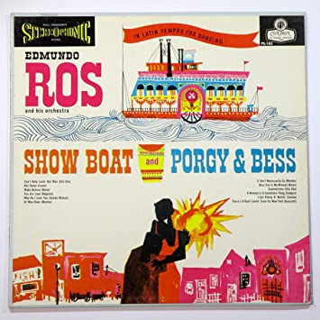

Social themes
 After Show Boat and Porgy and Bess, and as the struggle in America and elsewhere for minorities' civil rights progressed, Hammerstein, Harold Arlen, Yip Harburg and others were emboldened to write more musicals and operas that aimed to normalize societal toleration of minorities and urged racial harmony. Early Golden Age works that focused on racial tolerance included Finian's Rainbow and South Pacific. Towards the end of the Golden Age, several shows tackled Jewish subjects and issues, such as Fiddler on the Roof, Milk and Honey, Blitz! and later Rags. The original concept that became West Side Story was set in the Lower East Side during Easter-Passover celebrations; the rival gangs were to be Jewish and Italian Catholic. The creative team later decided that the Polish (white) vs. Puerto Rican conflict was fresher.
Tolerance as an important theme in musicals has continued in recent decades. The final expression of West Side Story left a message of racial tolerance. By the end of the 1960s, musicals became racially integrated, with black and white cast members even covering each other's roles, as they did in Hair. Homosexuality has also been explored in musicals, starting with Hair, and even more overtly in La Cage aux Folles, Falsettos, Rent, Hedwig and the Angry Inch and other shows in recent decades. Parade is a sensitive exploration of both anti-Semitism and historical American racism, and Ragtime similarly explores the experience of immigrants and minorities in America.